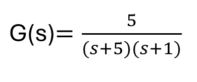
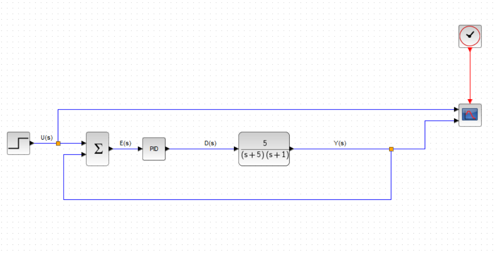
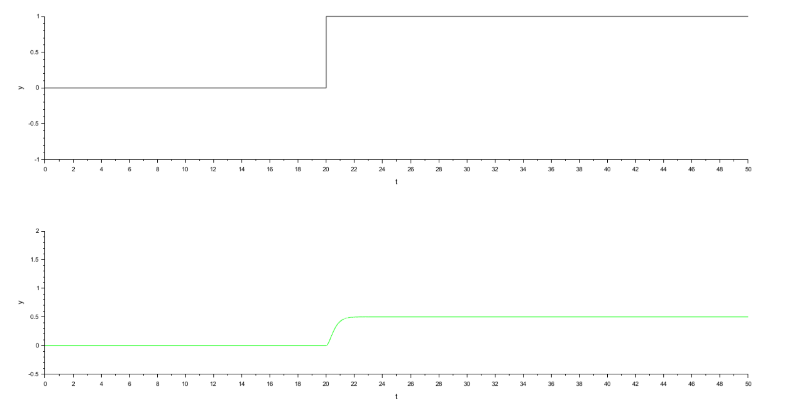
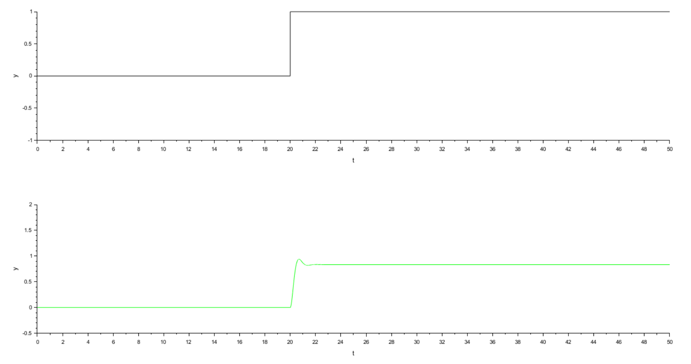
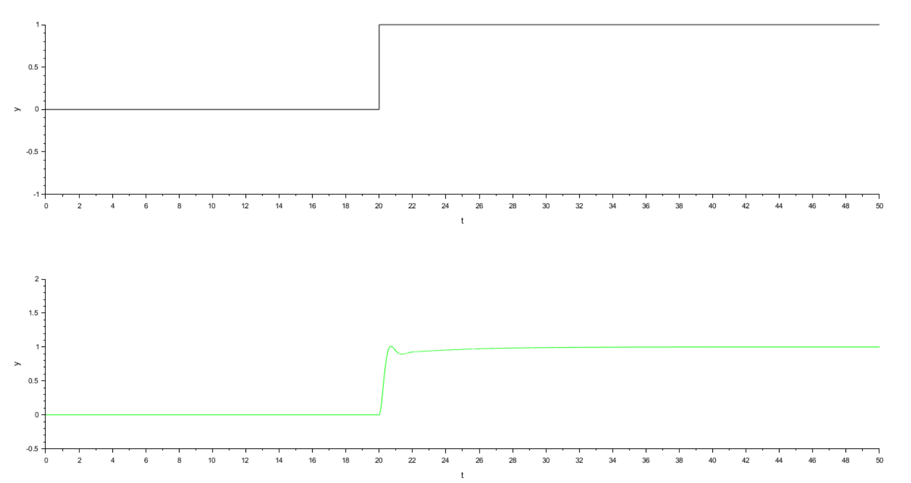

O problema que essa postagem se propõe a resolver, se encontra na página 60 do livro "Controle de Processos Industriais" de Alcindo Prado Junior. Nesse livro há um exercício que solicita que se projete um controlador PID para uma planta representada pela função de transferência apresentada na Figura 1. Esse problema será resolvido se utilizando o Xcos do Scilab. Será feito o ajuste do controlador PID para o sistema em malha fechada.

Na Figura 2 é apresenta o esquema da malha que foi utilizada para simulação da planta apresentada na Figura 1. A simulação foi feita no Xcos do Scilab.

A estratégia inicial de sintonia do PID é iniciar com um valor baixo de ganho proporcional Kp, um integrador Ki e derivativo Kd nulos. Verificar qual foi a resposta do sistema e depois disso ir fazendo ajustes graduais no controlador. A resposta para o controlador com Kp=1 é apresentado na Figura 3.
Pode-se ver que para esse valor de Kp, a resposta do sistema a uma entrada do tipo degrau unitário apresentou um erro de regime. A saída ao estímulo degrau convergiu para 0,5, um valor um pouco baixo. Não foi observado nenhum overshoot. Esse ajuste do ganho não foi suficiente. É necessário aumentar o valor do ganho proporcional e verificar o que acontece com a resposta.

Foram feitas mais simulações e foi observado que para Kp=2, o sistema converge para um valor um pouco maior, 0,667 e apresenta um overshoot de cerca de 2,1%. Em muitos projetos de controle considera-se aceitável um overshoot inferior a aproximadamente 20%. Dessa forma, aumentamos o Kp até 10. Na Figura 4, são apresentados os gráficos para o caso de um controlador com Kp = 5. Na Tabela 1 são apresentados os valores de ganho estacionário, pico e overshoot em porcentagem para valores crescentes de Kp. Na figura é possível observar que o sistema convergiu para 0,833 e teve um overshoot de 12,7%. O valor de erro diminuiu bastante em relação à simulação inicial. Para um valor de Kp=10, apesar de termos uma convergência mais próxima ao valor máximo do degrau (0,909), pode-se ver na tabela que o overshoot fica um pouco elevado no valor de 24,6%. Para nosso ajuste escolhemos como parâmetro para a malha um ganho proporcional de Kp=5 e vamos, com esse valor fixo, prosseguir com a sintonia dos outros parâmetros para tentar diminuir ou eliminar o erro de regime da resposta.

| Kp | Valor estacionário | Pico | Overshoot |
|---|---|---|---|
| 1 | 0,5 | 0,5 | 0 % |
| 3 | 0,75 | 0,793 | 5,7 % |
| 5 | 0,833 | 0,939 | 12,7 % |
| 7 | 0,875 | 1,036 | 18,4 % |
| 10 | 0,909 | 1,133 | 24,6 % |
Agora podemos prosseguir na sintonia ajustando os outros parâmetros. Embora o aumento de Kp reduza o erro estacionário, ele não elimina completamente esse erro. Para obter erro nulo em regime permanente para entradas do tipo degrau, é necessário introduzir a ação integral no controlador.
Com Ki=0,2, o sistema não converge até o final dos 50 s da simulação, não sendo um ajuste adequado. Mas podemos ver que estamos no caminho certo, pois o erro diminui bastante. Para Ki=0,5, o comportamento é idêntico. Para Ki=1,2, o erro de regime é anulado para t=47,179 s. Escolhemos Ki=1,5 para sintonia em que o erro de regime é anulado para t=41,276 s. A resposta para essa sintomia é apresentada na Figura 5.

Os resultados mostram que o ganho proporcional melhora a rapidez da resposta, mas não elimina completamente o erro estacionário. A introdução da ação integral permite eliminar esse erro, resultando em resposta que converge para o valor de referência.
Foi realizada variação do ganho proporcional entre 1 e 10. Observou-se redução progressiva do erro estacionário acompanhada de aumento do overshoot. Um valor intermediário de Kp=5 foi selecionado por apresentar overshoot moderado (12,7%) e boa rapidez de resposta. Para eliminar o erro estacionário observado com controle proporcional, introduziu-se ação integral no controlador. O ganho integral foi gradualmente aumentado até que a saída atingisse o valor de referência.
Embora a sintonia PI tenha apresentado desempenho satisfatório, foi realizado um teste adicional introduzindo ação derivativa no controlador. Observou-se que a inclusão de Kd=1 reduziu significativamente o overshoot da resposta sem comprometer a estabilidade do sistema. Esse resultado ilustra o efeito amortecedor da ação derivativa no controlador PID.
Desenvolvimento : Química Programada